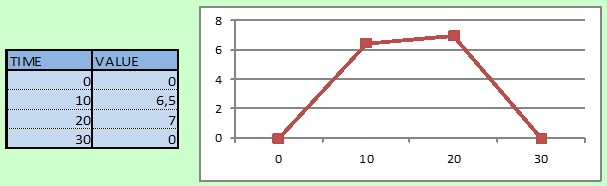

Additionally, the
Additionally, the Loopoption can be enabled so that the automation restarts from the beginning when its end is reached. Otherwise, it would stop.
The registers and coils defined in the slaves of the project will become
dynamic by binding them to value generators, called automations
.
Using automations will turn simple projects into realistic simulations.
An automation
is made of a succession of generators
.
Each generator is a formula that produces a dynamic value.
A generator is executed for a limited duration, and then the next
generator is used to continue producing the dynamic value.
For example, consider the following requirements:

The above graph is made of 3 segments. It can be simulated by using
3 linear generators:
Additionally, the Loop
option can be enabled so that the automation
restarts from the beginning when its end is reached. Otherwise, it would stop.
Clicking on the Add
button in the Automation
panel creates
a new automation in the current project. The new automation is instantly
added into the list. It contains no generator, and thus cannot generate
a dynamic value, yet.

It is very important that each automation in the project has a unique name. The name of the automation is what ModbusPal uses to create the association with the registers/coils of the MODBUS slaves.
The name of the automation can be changed, but if the new name is identical to the name of another existing automation, an error message will appear.
Click on the
button to open the automation editor. Information about how to edit an
automation can be found in
this page.
Clicking on the button will remove an automation from the current project.
Any association between the removed automation and the MODBUS slaves will also be deleted.
Bindings are required to associate automations and MODBUS slaves. Refer to the information on this page to learn about bindings and how to create them.
When a project file is loaded, or when new automations are created, automations are stopped and do not generate dynamic values. They have to be started.
An automation is started by clicking on its
button. It will stop automatically when its finished generating values,
except if the Loop
option has been activated in the editor. An
automation can be stopped at any time by clicking on the
button.
All automations can be started and stopped at once by clicking on the
Start all
or the Stop all
buttons.